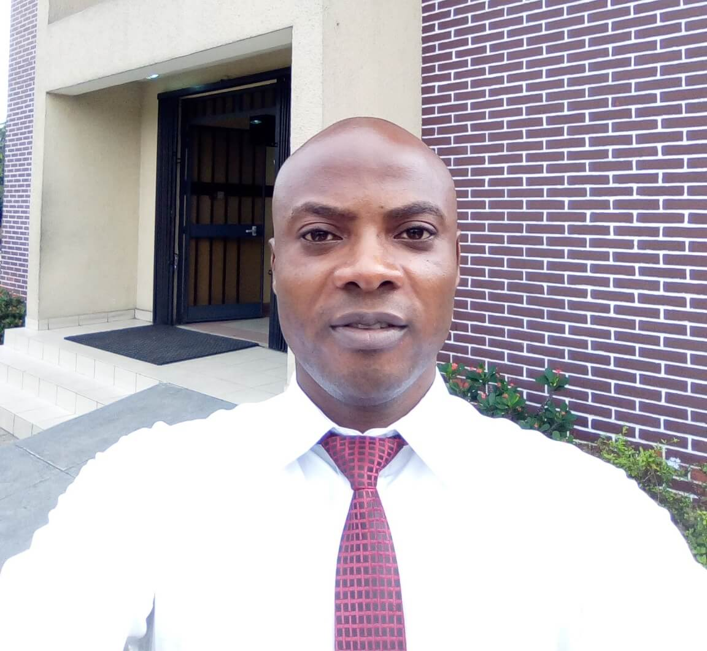

About Me
My name is Attah Collins (Web Developer) I am one of the Security Supervisors. I am a dedicated and hard working man who pays attention to details. With over 8 years of experience in engineering and technical, I can comfortably handle the instalation and maintenacere of refrigeration and air-conditioning systems, drilling and rig work, mechanical maintenance and web and computer programming.
Official flag of shell
Bonny Oil and Gas Terminal (BOGT)
Bonny Oil and Gas Terminal is operated by the Shell Petroleum Development Company and consists of two SBMs fed by a submarine pipeline. The terminal is located 22 km. off the south coast of Nigeria, in position 04° 11.00′ N, 007° 14.00′ E. It supplies crude to port Harcourt Refinery and Natural gas to Nigeria Liquified Natural gas. It is one of shell locations in Nigeria. It operates on The three HSSE Golden Rules : Comply with the law, standards and procedures, Intervene on unsafe or non-compliant actions and Respect our neighbors and The 9 IOGP life saving rules, which are : Bypassing safety controls, Confined space, Driving, Energy isolation, Hot work, Line of fire, Safe mechanical lifting, Permit To Work authorization, and Working at height.